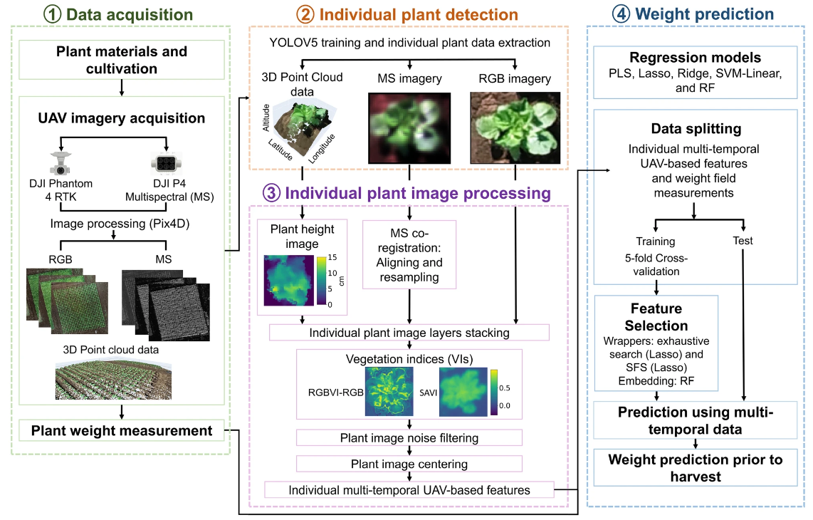

Andrés Aguilar
I am currently based in Tokyo, finishing my PhD studies at the University of Tokyo. My work is focused on plant phenotyping at the Plant Nutrition and Fertilizer laboratory. My research aims to speed up plant phenotyping by implementing remote sensing and machine learning techniques. I completed my Master's degree at the University of Manchester where I attempted to detectect rice fields using satellite data .
Publications

UAV-based individual Chinese cabbage weight prediction using multi-temporal data.
Andrés Aguilar-Ariza, Masanori Ishii, Toshio Miyazaki, Aika Saito, Hlaing Phyoe Khaing, Hnin Wint Phoo, Tomohiro Kondo, Toru Fujiwara, Wei Guo & Takehiro Kamiya. Scientific Reports 2023.
Paper Code
Andrés Aguilar-Ariza, Masanori Ishii, Toshio Miyazaki, Aika Saito, Hlaing Phyoe Khaing, Hnin Wint Phoo, Tomohiro Kondo, Toru Fujiwara, Wei Guo & Takehiro Kamiya. Scientific Reports 2023.
Paper Code
 The climate-smart village approach: framework of an integrative strategy for scaling up adaptation options in agriculture.
The climate-smart village approach: framework of an integrative strategy for scaling up adaptation options in agriculture.
Pramod K. Aggarwal , Andy Jarvis , Bruce M. Campbell , Robert B. Zougmoré , Arun Khatri-Chhetri , Sonja J. Vermeulen , Ana Maria Loboguerrero , Leocadio S. Sebastian , James Kinyangi , Osana Bonilla-Findji , Maren Radeny , John Recha , Deissy Martinez-Baron , Julian Ramirez-Villegas , Sophia Huyer , Philip Thornton , Eva Wollenberg , James Hansen , Patricia Alvarez-Toro , Andrés Aguilar-Ariza , David Arango-Londoño , Victor Patiño-Bravo , Ovidio Rivera , Mathieu Ouedraogo and Bui Tan Yen Ecology and Society 2018.
Paper